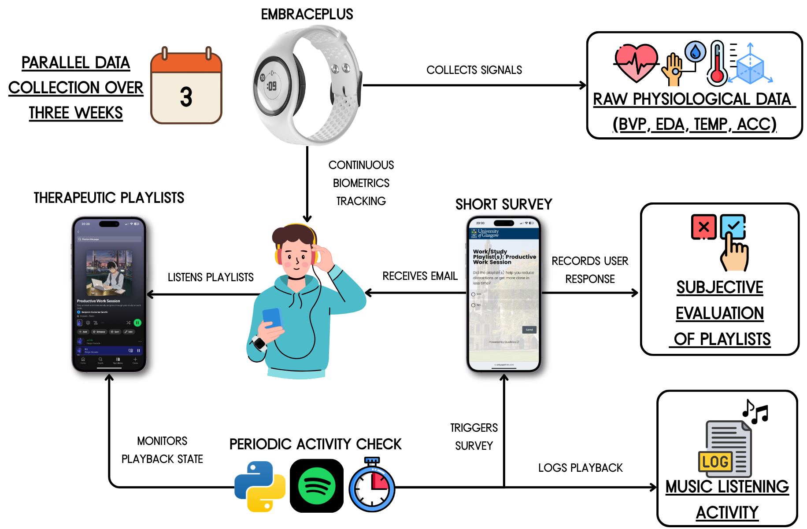

We introduces the BEATS dataset, a robust compilation of psycho-physiological data collected in the wild from 30 participants while they listened to curated playlists intended to promote well-being.
An acronym for Biomarkers, Experience and Affect from Therapeutic Soundscapes, the BEATS dataset aims to support research on wellbeing, music psychology, affective computing and signal processing. More specifically, this dataset includes: (1) sensor data collected during music listening sessions using a research-graded wearable device in free-movement environments; (2) self-reports on the playlists to produce the desired result; (3) individual characteristics, such as demographics, music preference, music training, and personality traits; and (4) overall well-being assessments before and after their experimental participation spanning for a number of weeks. By situating data collection outside of lab settings, the BEATS dataset offers the opportunity to study real-world music-listening scenarios, allowing for a richer exploration of the physiological, subjective and therapeutic effects of music under real-world conditions.
@inproceedings{gutierrez2025towards,
title={Towards Capturing the Therapeutic Effects of Music in Everyday Life: Building the Beats Dataset},
author={Gutierrez Serafin, Benjamin and Guha, Tanaya and Kawsar, Fahim},
booktitle={Companion of the 2025 ACM International Joint Conference on Pervasive and Ubiquitous Computing},
pages={1665--1669},
year={2025}
}